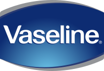

바세린 Vaseline
바세린(Vaseline)은 페트롤리움 젤리를 기반으로 한 미국의 스킨케어 브랜드이다.
최종 업데이트
바세린은 어떤 브랜드인가
바세린(Vaseline)은 미국 화학자 로버트 체스브로(Robert Chesebrough)가 1872년 페트롤리엄 젤리 제조 공정을 특허받으며 출범한 보습 브랜드다. 정제된 순수 페트롤라툼을 기반으로 한 보호 젤리에서 시작해 로션·립케어로 제품군을 넓혔고, 현재는 유니레버(Unilever) 산하 브랜드로 편입돼 최근 12개월 매출이 약 10억 유로를 넘는 글로벌 스킨케어 브랜드로 자리잡았다.
바세린은 어떻게 봐야 할까
경쟁 보습제와의 차이는 성분 구성에서 가장 뚜렷하다. 바세린은 정제된 페트롤라툼 100%의 단일 폐색(occlusive) 막으로 수분 증발을 막는 반면, 니베아는 미네랄 오일·글리세린 등을 배합한 크림 계열이고, 아쿠아퍼는 페트롤라툼 비중을 약 41%로 낮추고 라놀린·판테놀 등 보습 성분을 더해 더 부드럽고 흡습 기능까지 갖춘다.
이 단순함 덕에 바세린은 '페트롤리엄 젤리'의 대명사가 됐고, 낮은 가격과 약국·대형마트 어디서나 구할 수 있는 접근성으로 대중적 보습 표준으로 굳었다. 최근에는 글루타티온·히알루론산을 결합한 글루타-하이아 같은 더모케어·미백 라인으로 확장하며, 단순 보호제에서 기능성 스킨케어로 영역을 넓히는 점이 함의다.
한국에서는 1985년 애경을 통해 처음 들어와 겨울철 보습제로 친숙하다.
바세린은 어떻게 시작되고 성장했나
창업자 체스브로는 1859년경 펜실베이니아 타이터스빌(Titusville) 유전을 찾았다가, 시추 펌프에 들러붙어 주기적으로 긁어내야 하던 '로드 왁스(rod wax)'라는 석유 부산물을 발견했다. 현장 인부들이 이 잔여물을 베이거나 덴 상처에 발라 쓰는 모습을 보고, 그는 이를 숯으로 여과·정제해 맑은 젤리로 만드는 공정을 개발했다.
1872년 미국 특허(제127,568호)를 받고 '바세린'이라는 상표를 붙였는데, 이름은 물을 뜻하는 독일어와 기름을 뜻하는 그리스어를 합친 것으로 알려진다. 그는 군중 앞에서 자기 피부를 불이나 산으로 다치게 한 뒤 젤리를 발라 보이는 자가실험식 시연으로 제품을 알렸고, 1874년 무렵 하루 천여 병이 팔렸다.
1875년 체스브로 제조회사를 세웠으며, 이후 여러 합병을 거쳐 최종적으로 유니레버로 편입됐다.
바세린의 브랜드 아이덴티티는 무엇인가
바세린은 상처 치유의 헤리티지에서 출발해 '바세린의 치유력(The Healing Power of Vaseline)'을 첫 글로벌 통합 포지셔닝으로 삼았고, 최근에는 '모든 피부에 건강한 피부를'이라는 미션으로 뷰티 영역까지 넓혔다. 로고는 타원형 바탕에 흰색 산세리프 워드마크를 얹은 형태이며, 핵심 색은 신뢰·전문성·보호를 상징하는 블루다.
타깃은 건조하고 민감한 피부를 가진 폭넓은 일상 소비자이며, 보이스는 과학적 근거에 기반하되 친근하고 실용적인 톤을 지향한다.
바세린의 대표 제품과 서비스는 무엇인가
대표 제품은 100% 백색 페트롤라툼의 오리지널 힐링 젤리이며, 글리세린 등을 더한 인텐시브 케어 바디로션, 작은 통·스틱형 립 테라피로 이어진다. 여기에 클리니컬 케어와 글루타-하이아 미백 라인이 더해진다.
가격대는 품목·용량에 따라 다르지만 평균 1만 원대의 저가 보급형이며, 약국·드럭스토어·대형마트와 온라인 등 폭넓은 채널로 유통된다.
바세린은 지금 어떤 상태인가
모회사는 영국계 생활용품 기업 유니레버(Unilever)로, 본사는 영국 런던에 있다. 바세린은 유니레버의 30개 파워 브랜드 중 하나로, 최근 12개월 매출이 약 10억 유로를 넘어섰고 2024년과 2025년 상반기에 각각 두 자릿수 물량 성장을 기록했다.
다만 한국 시장 내 단일 브랜드 매출과 점유율 등 세부 수치는 별도로 공개되지 않았다.
바세린 연혁 — 주요 사건은 언제였나
바세린 로고는 어떻게 변해왔나

BI/CI 아카이브보관 이미지 1자주 묻는 질문
바세린는 어느 나라 브랜드인가요?
바세린는 미국의 뷰티·퍼스널케어 브랜드입니다.
바세린는 언제 설립되었나요?
바세린는 1872년 설립되었습니다.
바세린의 브랜드 아이덴티티는 무엇인가요?
바세린은 상처 치유의 헤리티지에서 출발해 '바세린의 치유력(The Healing Power of Vaseline)'을 첫 글로벌 통합 포지셔닝으로 삼았고, 최근에는 '모든 피부에 건강한 피부를'이라는 미션으로 뷰티 영역까지 넓혔다.
바세린의 대표 제품은 무엇인가요?
대표 제품은 100% 백색 페트롤라툼의 오리지널 힐링 젤리이며, 글리세린 등을 더한 인텐시브 케어 바디로션, 작은 통·스틱형 립 테라피로 이어진다.
바세린는 현재 어떤 상태인가요?
모회사는 영국계 생활용품 기업 유니레버(Unilever)로, 본사는 영국 런던에 있다.
바세린의 공식 웹사이트는 어디인가요?
바세린의 공식 웹사이트는 https://www.vaseline.com/ 입니다.
출처와 검증
바세린 관련 참고: 공식 웹사이트 · 위키데이터 Q185120 · 한국어 위키백과 · 영어 위키백과. 브랜드명은 한글과 원어를 함께 표기하되 데이터에 없는 표기는 만들지 않습니다. 기원 국가·설립연도는 검수된 정의문에서 확인된 값을 우선하고, 없을 때만 공식 웹사이트 URL이 일치하는 위키데이터 개체의 값을 씁니다. 위키데이터 값은 2026-09-07 기준입니다.